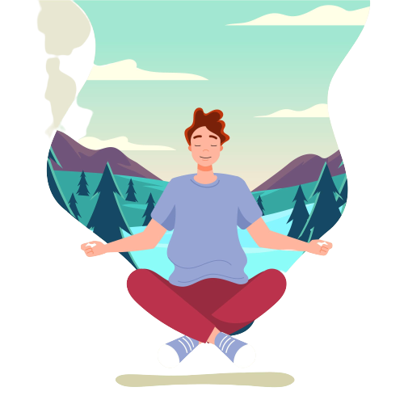

Sitting in a comfortable position, allow your shoulders to drop and relax, and plant your feet firmly on the ground. Or, if you are sitting cross-legged, feel the sense of contact between your feet and the seat and the floor beneath you.Now gently close your eyes, and for the next few breaths bring your full focus of attention to your breathing. Notice the feeling of the air flowing in through the nostrils, down into the lungs, and down into the belly as you inhale and on the exhale, feel the release of any tension as you let the air out slowly.
Leaves on a Stream Exercise
Now let’s consider a metaphor. Within the strong, turbulent winds of a hurricane, the eye, the center of the hurricane, is quiet. There is no wind and no movement there. For a moment, picture this idea in your mind. Can you visualise the strong, turbulent winds of a hurricane, and the inner core that is peaceful and quiet?

Let’s see if you can become like the centre of the hurricane. Your current circumstances, your thoughts, your feelings, and the sensations throughout your body, can be compared to the winds of a hurricane. Is it possible for you to let go of all of these things for a moment, so that you are no longer taking part in them... like the centre of the hurricane is not taking part in the turbulent surrounding winds.

To do this, start by focusing on your breath. Simply breathe in and breathe out. Focus inward.Just like the eye is deep within the hurricane, your eye is deep within you. Use your breath to connect to this part of you. Simply breathe in and breathe out.Stay connected to your breath. If anything stressful happens in this moment, such as negative thoughts, unpleasant feelings, annoying sounds, difficult life events, memories... try to look at them as if they are the turbulent wind of the hurricane; whirling around, continually changing, unpredictable in nature...

Stay connected to your breath. If anything stressful happens in this moment, such as negative thoughts, unpleasant feelings, annoying sounds, difficult life events, memories... try to look at them as if they are the turbulent wind of the hurricane; whirling around, continually changing, unpredictable in nature. Notice that you are not them. You are the silent centre of the hurricane, the part that is peaceful, despite what is happening around you.You are the silent centre of the hurricane, peaceful and at ease. You are not reacting, you are simply observing. Like the wind of the hurricane, these experiences are constantly moving and changing. You, on the other hand, are stable. You are not moving or being carried away by them.No matter how intense or bad the hurricane gets, the eye is always centered, calm and at ease. Even the most turbulent hurricane cannot hurt or harm the eye; the eye is safe. Whenever you feel you need to restore your inner peace, use your breath to connect to this silent part of yourself. Just breathe in and breathe out. It may help to visualise the hurricane, with yourself in the centre.
It can be difficult to see the eye of the hurricane at times, and sometimes we forget the eye is there... however, it is always there. If we examine closely enough—even the strongest, darkest hurricane— sooner or later we’ll see the eye, centered and constant. Now, when you feel ready, slowly open your eyes.